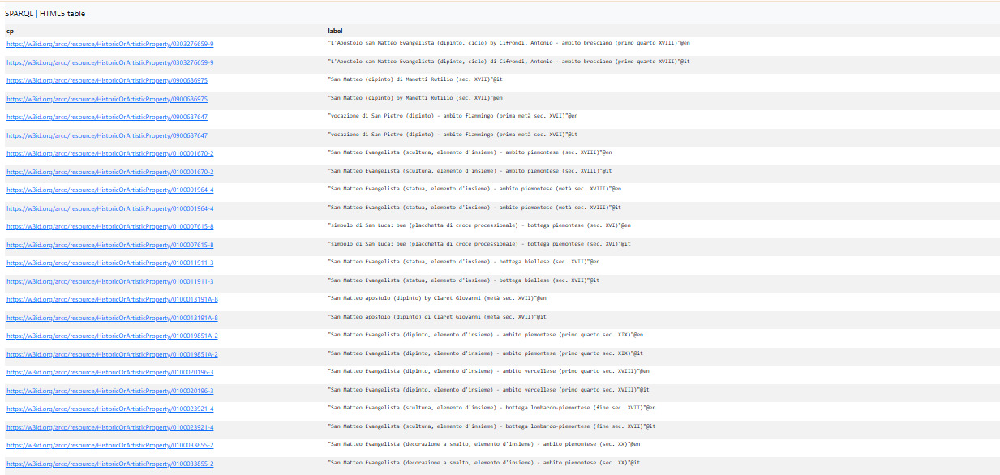
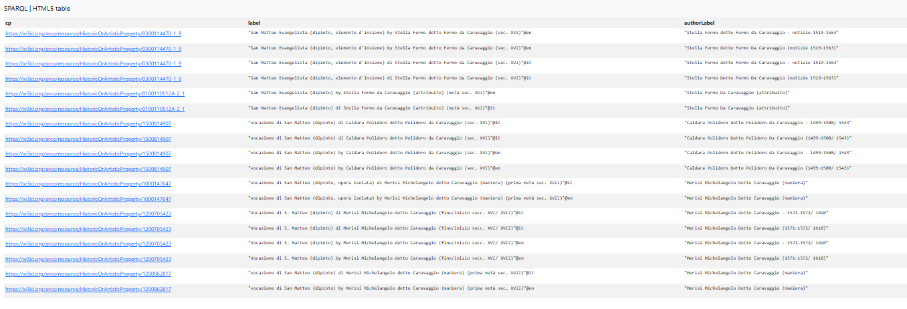
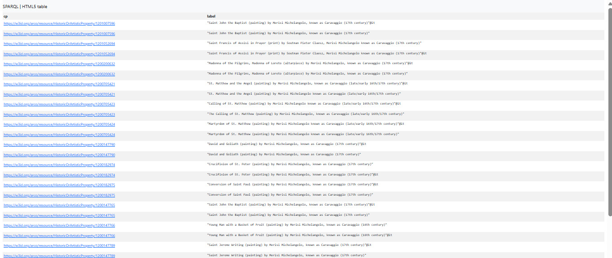

<!DOCTYPE html>
<html lang="en">
<head>
<meta charset="UTF-8">
<title>SPARQL Queries | Saint Matthew Project</title>

<style>
body{
    margin:0;
    font-family: 'Segoe UI', Tahoma, Geneva, Verdana, sans-serif;
    background:#fafafa;
    color:#222;
    line-height:1.7;
}

header{
    background:#1b1b1b;
    color:white;
    text-align:center;
    padding:35px 20px;
    border-bottom:3px solid #c9a227;
}

header h1{
    margin:0;
    font-size:28px;
}

header p{
    margin-top:6px;
    color:#ccc;
}

nav{
    background:#222;
    display:flex;
    justify-content:center;
    flex-wrap:wrap;
}

nav a{
    color:white;
    text-decoration:none;
    padding:12px 16px;
}

nav a:hover{
    background:#c9a227;
    color:#111;
}

.container{
    max-width:950px;
    margin:40px auto;
    background:white;
    padding:35px;
    border-radius:12px;
    box-shadow:0 6px 25px rgba(0,0,0,0.08);
    border-left:5px solid #c9a227;
}

pre{
    background:#0f0f0f;
    color:#f1f1f1;
    padding:15px;
    overflow-x:auto;
    border-radius:10px;
    font-size:13px;
}

h2{
    margin-top:30px;
}

footer{
    text-align:center;
    padding:20px;
    margin-top:40px;
    background:#1b1b1b;
    color:#ccc;
    border-top:3px solid #c9a227;
}
</style>
</head>

<body>

<header>
<h1>The Calling of Saint Matthew</h1>
<p>Michelangelo Merisi da Caravaggio (1599–1600)</p>
</header>

<nav>
<a href="index.html">Home</a>
<a href="sparql.html">SPARQL</a>
<a href="llm.html">LLM Analysis</a>
<a href="gaps.html">Identifying Gaps</a>
<a href="rdf.html">RDF Triples</a>
<a href="challenges.html">Challenges</a>
<a href="conclusion.html">Concluision</a>
</nav>

<div class="container">

<!-- QUERY 1 -->
<h2>Query 1</h2>

<p>
We began with a broad survey to obtain all Cultural Properties related to Saint Matthew, without limiting the author. The goal was to understand how the subject is represented in ArCo and which works are related to it.
</p>

<div class="expl">

<h3>Explanation of keywords used:</h3>

<ul>
  <li><b><code>FILTER(REGEX)</code></b>: used to capture variations of the subject such as “San Matteo”, “vocazione”, and “simbolo di San Matteo”.</li>
  <li><b><code>DISTINCT</code></b>: eliminates duplicate results caused by bilingual labels.</li>
  <li><b><code>?cp</code></b>: stands for Cultural Property.</li>
  <li><b><code>?label</code></b>: represents the title or name of the cultural property.</li>
</ul>

</div>

<pre>
PREFIX rdfs: <http://www.w3.org/2000/01/rdf-schema#>
PREFIX arco: <https://w3id.org/arco/ontology/arco/>

SELECT DISTINCT ?cp ?label
WHERE {
 ?cp a arco:HistoricOrArtisticProperty ;
     rdfs:label ?label .

 FILTER(REGEX(?label, "san matteo|vocazione|simbolo", "i"))
}
</pre>



<!-- QUERY 2 -->
<h2>Query 2 — Author-level filtering (initial attempt)</h2>

<p>
We improved the query to include author information in order to separate works by Michelangelo Merisi da Caravaggio.
</p>

<div class="expl">

<h3>Explanation of keywords used:</h3>

<ul>
  <li><b><code>a-cd:hasAuthor</code></b>: links cultural properties to their authors.</li>
  <li><b><code>REGEX</code></b>: used to detect patterns inside text values such as “merisi” and “caravaggio”.</li>
  <li><b><code>FILTER</code></b>: restricts results based on conditions applied to labels and author names.</li>
  <li><b><code>?authorLabel</code></b>: represents the name of the author in the dataset.</li>
</ul>

</div>

<pre>
PREFIX rdfs: <http://www.w3.org/2000/01/rdf-schema#>
PREFIX arco: <https://w3id.org/arco/ontology/arco/>
PREFIX a-cd: <https://w3id.org/arco/ontology/context-description/>

SELECT DISTINCT ?cp ?label ?authorLabel
WHERE {
 ?cp a arco:HistoricOrArtisticProperty ;
     rdfs:label ?label ;
     a-cd:hasAuthor ?author .

 ?author rdfs:label ?authorLabel .

 FILTER(
   REGEX(?authorLabel, "merisi", "i") ||
   REGEX(?authorLabel, "caravaggio", "i")
 )

 FILTER(
   REGEX(?label, "vocazione|san matteo", "i")
 )
}
</pre>



<!-- QUERY 3 -->
<h2>Query 3 — Identity-based filtering (final resolution)</h2>

<p>
To solve ambiguity, we replaced text-based filtering with exact IRI matching for Michelangelo Merisi da Caravaggio.
</p>

<pre>
PREFIX rdfs: <http://www.w3.org/2000/01/rdf-schema#>
PREFIX arco: <https://w3id.org/arco/ontology/arco/>

SELECT DISTINCT ?cp ?label
WHERE {
 ?cp a arco:HistoricOrArtisticProperty ;
     rdfs:label ?label ;
     a-cd:hasAuthor <https://w3id.org/arco/resource/Agent/256dd79b8cf8c58e6222b74d5db26c2e> .
}
</pre>



</div>

<footer>
SPARQL Analysis | KE4H Project © 2026
</footer>

</body>
</html>
